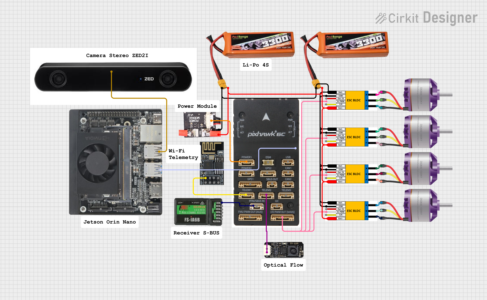

Readme
PalmBee
PalmBee is a package designed to automate the pollination process in palm tree plantations using drones. This package leverages the capabilities of PX4 and ROS2 Humble to provide an efficient and reliable solution for pollination.
Drone System Wiring
Drone Wiring Diagram

1. Companion Computer Communication
| Device | Device Port | Connected To | Pixhawk / Jetson Port | Description |
|---|---|---|---|---|
| Jetson Orin Nano | USB | Pixhawk 6C | USB Type-C | MAVLink communication (companion computer) |
| ZED2i Camera | USB | Jetson Orin Nano | USB 3.0 Jetson | Stereo camera for vision processing |
2. Telemetry & Sensor
| Device | Device Port | Connected To | Pixhawk Port | Description |
|---|---|---|---|---|
| CUAV PW-Link | UART | Pixhawk 6C | TELEM1 | Telemetry communication to ground station |
| Optical Flow MTF-01P | UART | Pixhawk 6C | TELEM2 | Optical flow sensor for movement estimation |
3. RC Receiver
| Device | Receiver Port | Connected To | Pixhawk Port | Description |
|---|---|---|---|---|
| RC Receiver | SBUS Out | Pixhawk 6C | SBUS | Pilot control input |
4. Motor & ESC (Standard X Configuration)
| Motor | ESC Signal | Pixhawk Port | Description |
|---|---|---|---|
| Motor 1 | PWM Signal | MAIN OUT 1 | Front Right |
| Motor 2 | PWM Signal | MAIN OUT 2 | Rear Left |
| Motor 3 | PWM Signal | MAIN OUT 3 | Front Left |
| Motor 4 | PWM Signal | MAIN OUT 4 | Rear Right |
5. System Architecture Summary
| Component | Function |
|---|---|
| Pixhawk 6C | Main flight controller |
| Jetson Orin Nano | Companion computer for AI / vision |
| ZED2i | Stereo camera for visual perception |
| MTF-01P | Optical flow sensor for velocity estimation |
| PW-Link | Telemetry to Ground Control Station |
| Receiver SBUS | Manual control from pilot |
| ESC + Brushless | Drone motor actuator |
Compatibility
- Ubuntu 22.04
- ROS2 Humble
- ZED SDK 4.2 ( with ZED Wrapper 4.2.5 )
- Ardupilot
- Jetpack 6.2.x
Installation
To install the PalmBee package, follow these steps:
- Install and setup ROS2 Humble First:
using this documentation
https://docs.ros.org/en/humble/Installation.html
- Install and setup this specific Zed SDK:
[git clone https://github.com/ep51lon/PalmBee.git](https://www.stereolabs.com/en-id/developers/release/4.2
note : this repository is based on wrapper 4.2.5 and tested on ZED SDK for JetPack 6.1 and 6.2 (L4T 36.4))
- Create the workspace directory:
mkdir -p palmbee_ws/src
cd palmbee_ws/src
- Clone the repository:
git clone https://github.com/ep51lon/PalmBee.git
- Install dependencies:
git clone https://github.com/ep51lon/PalmBee.git
or build specific package (for example, pb_perception) using
colcon build --packages-select pb_perception
- Build the package:
colcon build
or build specific package (for example, pb_perception) using
colcon build --packages-select pb_perception
- Source the setup file:
source install/setup.bash
or set it up on ~/.bashrc using the source command
note : for yolo_ws / u can also build it on different workspace and build it too ( but u must install / set yolo first and any package that yolo needed )
Usage
TODO
To use the PalmBee package, follow these steps:
- Launch camera (for example using Realsense):
ros2 launch pb_perception rs_slam_launch.py
- Launch AprilTag Detector:
ros2 launch pb_perception rs_apriltag_launch.py
- Get annotated image and coordinates:
ros2 run pb_perception get_markers.py
- Open your favorite image viewer to display the anotated image:
ros2 run rqt_image_view rqt_image_view
and select the image topic to display.
TO START AUTOMATION
- run or start stack script
Stack script are a .sh type file that are there so it's make the starting or running the ROS2 package much more easier since for this repository, it needed to run more or less 6 package ( included rosbag for logging purpose ) Stack script for this purpose located in ~/script/ with file name start_pb_stack.sh. to start it, because it's a normal script, no need to build it, just chmod +x "path of the file" to make it executable. example :
chmod +x ~/script/start_pb_stack.sh
~/script/start_pb_stack.sh
note : wait until all the terminal ros2 package windows to finish starting and the stack script done running, don't forget to check mission planner for bad vision warning !
- starting yolo package
the yolo ros2 executable for object detection are located in ~/yolo_ws/src/yolov11_ros/yolov11_ros/yolo_node.py , after colcon build it, to start the executable here the command for it :
ros2 launch yolob11_ros yolo_v11_ros_launch.py
wait until there's nomore new line being shown in the terminal or the coordinate of the detected object to be shown in terminal ( if the object are possible to be detected in ground ). if yolo still can't detected the desirable object in ground, this yolo package still can detect and send the desirable object coordinat when the vehicle or drone move / fly. note : becareful when it's only posible to detect the object after the vehicle starting / moving, since yolo keep sending coordinate of it's desirable detected object
- starting control manager package
Control manager package are there to command the vehicle or drone to move depend's on what being commanded ( for this case, it's a circular motion after take off and object detected with it's coordinate ), this package is usually located in the same workspace as the main palmbee_ws ( in ~/palmbee_ws/src/PalmBee/pb_control/src/cm_setpoint.cpp ). to start this package, use this command :
ros2 launch pb_control cm_setpoint.launch.py
note : there's one more executable from pb_control that can be used if needed 2 different kind of executable.
after starting , wait until in the terminal where this package startet to show "waiting for arm". to armed the vehicle, use mission planner or GCS to do it. after the drone being armed by GCS, it will start flying automaticly according to it's mission
For more detailed instructions and documentation, please refer to the wiki.
Contributing
We welcome contributions to the PalmBee package. Please fork the repository and submit pull requests for any enhancements or bug fixes.
License
This project is licensed under the MIT License - see the LICENSE file for details.